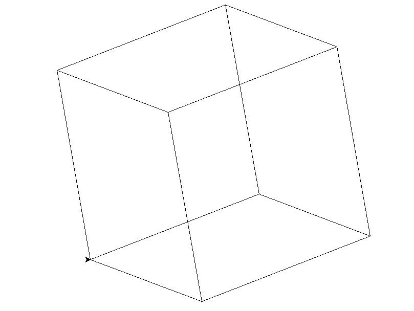
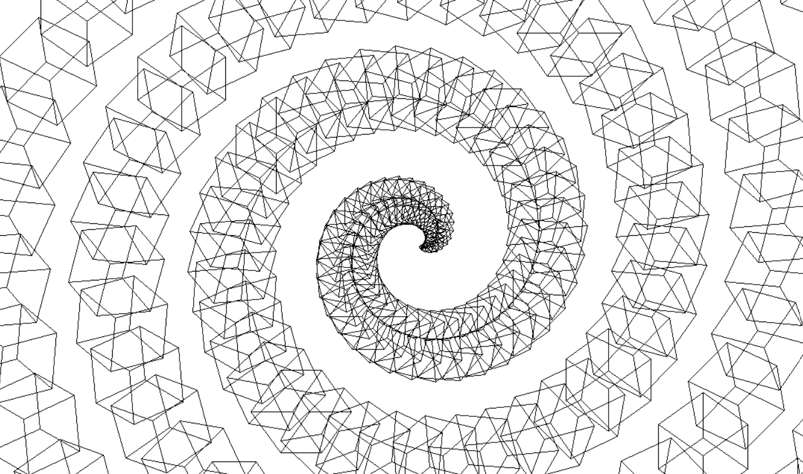
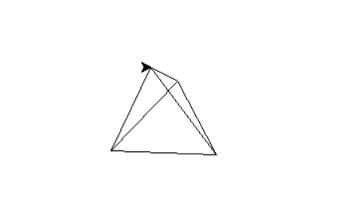

Drawing 3D Cubes with Turtle
When learning Python, I quickly gravitated to Turtle, a library that allows you to draw on the screen with a pointer that moves around the screen.
I wondered how hard it would be to draw 3D objects with it, and figured it would just require creating some functions to perform all the trigonometry. And hey presto, you have converted a bunch of 3D points to a 2D plane and displayed them.
The undertaking of creating a perspective projection seemed a bit too much, but a simpler Parallel Projection was doable. The plan was simple: I could do the rotations in 3D space and then flatten them along an axis.

And so you get a 3d cube, this explination skims over a lot of trial and error, and an attempt to skim over the detail with a different approach.
The logicall progression from here is lots of cubes, and why not put them in a spiral.

A more logicall progression from here is actually a more generalised version that can work with different shapes. Which I have made a start at, it works (seen bellow is the tetrahedron), adding more shapes or loading from a generally used format for geometry could be an avenue to take the project.

Reflection:
Overall this project works, and does something kind of fun! It is mostly readable and designed in a pretty reasonable way (maybe a more OO design could fit better).
A reoccuring theme throughout this early work is how these small projects work as unguided sprints, which definetly worked as a learning tool, but a consistent focussed effort to a larger project may yeild a more fullfilling result.
repo here